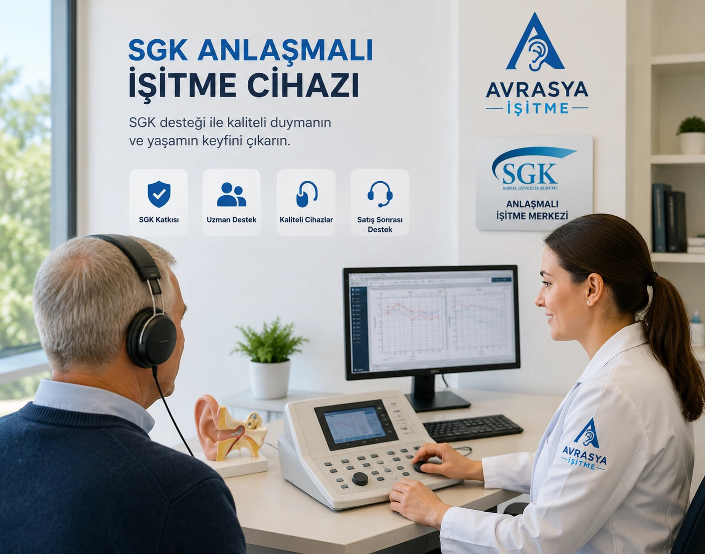

SGK işitme cihazı desteğinden yararlanabilir, devlet katkısı hakkında bilgi alabilir ve size uygun işitme cihazı seçeneklerini uzmanlarımızla değerlendirebilirsiniz.

Kulak Burun Boğaz uzmanından işitme kaybını gösteren sağlık kurulu raporu alınır.
Uzman doktor tarafından işitme cihazı kullanımına yönelik reçete düzenlenir.
Gerekli evraklar hazırlanarak SGK desteği için başvuru süreci tamamlanır.
İşitme cihazı uygulaması yapılır ve kişiye özel ayarları tamamlanır.
SGK belirli şartları sağlayan bireyler için işitme cihazı desteği sunmaktadır. İşitme kaybı yaşayan bireyler gerekli rapor ve reçete işlemlerini tamamladıktan sonra SGK katkısından yararlanabilir.
Avrasya İşitme olarak SGK anlaşmalı hizmet sunuyor, süreç boyunca danışanlarımıza evrak hazırlığı, cihaz seçimi ve uygulama aşamalarında destek veriyoruz.
İşitme kaybınız için SGK desteği alıp alamayacağınızı öğrenmek, gerekli evraklar hakkında bilgi almak ve size uygun cihazları incelemek için bizimle iletişime geçin.
SGK desteği kişinin yaşına, cihaz tipine ve güncel mevzuata göre değişmektedir. Güncel destek miktarı için merkezimizden bilgi alabilirsiniz.
İşitme kaybını gösteren sağlık kurulu raporu ve uzman doktor reçetesi bulunan kişiler SGK desteğinden yararlanabilir.
Evet. SGK desteğinden yararlanabilmek için geçerli sağlık kurulu raporu gereklidir.
Destek süreleri yaş grubuna ve güncel SGK kurallarına göre değişiklik gösterebilir.